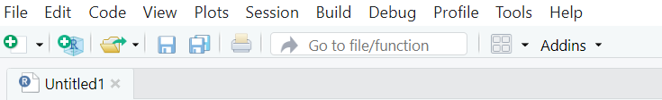

R
Learning R
Contributors
- Several colleagues/PhD students (2021-2023)
- Ler Vin See (Jan 2024)
- Sarah Lim (July 2024)
Steps to follow
Step 1: Installing RStudio
Install RStudio and R (and know the difference between them)
- You can install both using this link - R is both a software and programming language
- Rstudio provides a (nice) environment to run R
- This website provides a nice explanation of key concepts
Step 2: Installing R Packages
In Rstudio, perform these 2 basic chores: - Install R packages1
i. readxl
ii. tidyverse2
iii. here
iv. janitor
v. rms
1 Packages that are downloaded contain many functions that can be used to accomplishes some tasks. Each R function is a set of statements organized together to perform a specific task.
2 tidyverse is different from the other packages, as it is a package that contains other packages. You can view the packages contained in tidyverse using this link. Note, however, that it is still crucial to learn base R!
Package, Function, Code: An Analogy
A package with its many functions can be seen as a book containing many pages. Just like how every page of a book tells a story, every R function in a package is based on accomplishing a task (e.g. tidying workspace or reading excel sheets)
A function can be seen as a page contained within a book (the package). This is the most important part of the 3 components mentioned here, as these functions are the ones you’ll be using when coding in RStudio. Functions will perform tasks for you so you don’t have to code something from scratch.
To access the available functions, you first have to “activate” the package that the function is found in. You can do this by using the library() function (add the name of the package between the brackets). To learn about the functions available in a package, click on the “packages” button at the bottom right panel, and it will display a list of functions as well as what they will do
Codes can be seen as the letters found on a page (function). Each page has a different number of letters, which is similar to how some functions are more complicated than others, and as such contain more lines of code.
When you try downloading R packages, RStudio may prompt you to install Rtools . You can do so on this website
To learn about the functions available in a package, click on the “packages” button at the bottom right panel, and it will display a list of functions as well as what they will do
Step 2.1: How to use packages
- Many functions that can aid in data analysis are found within packages that you have downloaded earlier. To access these functions, you first have to load or “activate” the package that the function is found in. You can do this by using
library(package you want to load)
Step 2.2: Moving Rstudio Panels
- Move console pane to the right
- Do this by clicking on the icon that looks like for squares on the left of “Addins”, where you will select the option “Console on right”

Step 3: Creating a Project Folder

Why it is important
- Having clear project organisation simplifies understanding of information for both you and your collaborators
- A consistent and logical structure allows you to access and work with codes and data conveniently, avoiding situations where you have “missing” codes or data files
- A well organised project reduces the risk of introducing bugs or errors into your workflow and even if they do occur, it is easier to track down the errors and deal with them efficiently
- Open R studio
- Click File- New Project- New Directory- New Project- enter Project name- Create folder in preferred location (e.g. in Desktop)- Create Project

- Click the white icon with green + sign on the top left corner to create new R script and save it

- Add data files into the project file as necessary.
- As desired, open the project folder ① and click on the R project file ② . Should you have followed the above steps, you will be able to access the R script ③ and relevant data files ④ from within the project folder to work on. This is highly recommended for your convenience.

Alternatively, you can watch this video for more detailed instructions
Tip:
- Use
herepackage after installing it in Step 2. It helps you locate your files if you start working in R without first opening a project folder, learn more here
Step 4: fastR lesson
3 Gotcha! User needs to understand that nothing gets saved after each session and all codes in R script need to be re-run during each session.
Step 5: Learning important verbs
- Try searching up verbs in the
tidyversepackage - Based on the built-in
mtcars, learn how to use the pipe (%>%) operator + the followingdplyrverbs4 :filter,select,arrange,count,rename,case_when,mutate - When searching for info on how to perform some actions using R, try adding the package name in the prompt, or use ?(package name) to see the functions available in a specific package
- Basic tutorial
- Data analysis intro vid
-
Andrew Heiss website
- Peter D.R. Higgins e-book
-
recode()andrelevelfactor levels using theforcats::fct_relevel()
4 dplyr is a powerful R package for data manipulation. It provides a consistent set of verbs that help you tackle common data manipulation tasks. It is a package contained within tidyverse. You can get more details from this link
Step 6: Reading files
- If you plan to use Rstudio for data analysis and plan to import excel sheets, create a folder to store all the relevant files you’ll be using for analysis
- Read an external file: use
here()package to manage file-path
Step 6.1: Read excel files
-
readxlpackage is part of the tidyverse, with read_excel() as the main function that reads excel files (.xlsx) into R - This function can handle multiple sheets and retains data types and formatting from excel
- On
Rstudio, create a new project (refer to step 3) and shift this file into the same file with the excel sheet - In the R script, load necessary libraries
- List all files5 in the current project directory
- Filter the list to find the specific excel file
5 list.files() will only detect files that are located in the same folder as the project you are working on. Make sure to add everything you need (e.g. excel spreadsheets) in the same folder
More on readxl here
Creating a project is useful, as it allows you to access and manage your own files more conveniently using list.files() (more on this later)
# Load necessary libraries
library(readxl)
library(stringr)
# List all files in the current project directory
files <- list.files()
# Filter the list to find the specific Excel file
file_to_read <- str_subset(files, "excel_file_1")Step 6.2: Read csv files
-
readrpackage is also part of the tidyverse, with read_csv() as the main function that reads csv files (.csv) into R - This function is faster and more memory-efficient for large datasets compared excel files, and universally supports format for tabular data
- On
Rstudio, create a new project and shift this file containing relevant csv files - In the R script, load necessary libraries
- List the csv files
- Access your desired data
More on readr here
# Load necessary libraries
library(readr)
# List csv files
csv_files <- list.files(pattern = "*.csv")
# Read all csv files into a list of data frames
csv_data <- lapply(csv_files, read_csv)
# Access specific data frames (e.g., first and second files)
csv_data[[1]] #Accesses the first csv data frame
csv_data[[2]] #Accesses the second csv data frameStep 7: Data Cleaning
- Go through the Janitor vignette
- Key functions like
clean_names(), remove_empty(c("rows", "cols")), adorn_rounding()tidy your data, whiletabyl()can tabulate and summarise them
Step 8: Additional lessons and more verbs
- Learn more variable selection operators :
starts_with(), ends_with(), contains(), matches() - Learn more
dplyrverbs and base R functions, this contains a comprehensive cheat sheet
- Go through lessons \(9\) to \(13\) of fastR6
6 How does tapply() compare with group_by + summarise ?
Step 9: Neaten your R script
- Ctrl + Shift + R to create sections between codes
- Use # to label your codes/ comment as R does not read it
- Alt + L to compress a highlighted chunk of code
Resources to learn R
R Weekly newsletter: e-mail is sent every Monday and is full of helpful tutorials about how to do stuff with R.
#rstats: For twitter users
StackOverflow: Q&A site with answers to all sorts of programming questions
RStudio Community a forum for Rstudio users
R for Data Science: A free online book for learning the basics of R and the tidyverse.
R and RStudio cheat sheets: A large collection of simple cheat sheets for RStudio, ggplot2, and other R-related things.
CSE 631: Principles & Practice of Data Visualization:
Data Cleaning: A few simple examples that go through the basics of cleaning data
Code smart with ChatGPT: How you can use ChatGPT to write codes and identify errors